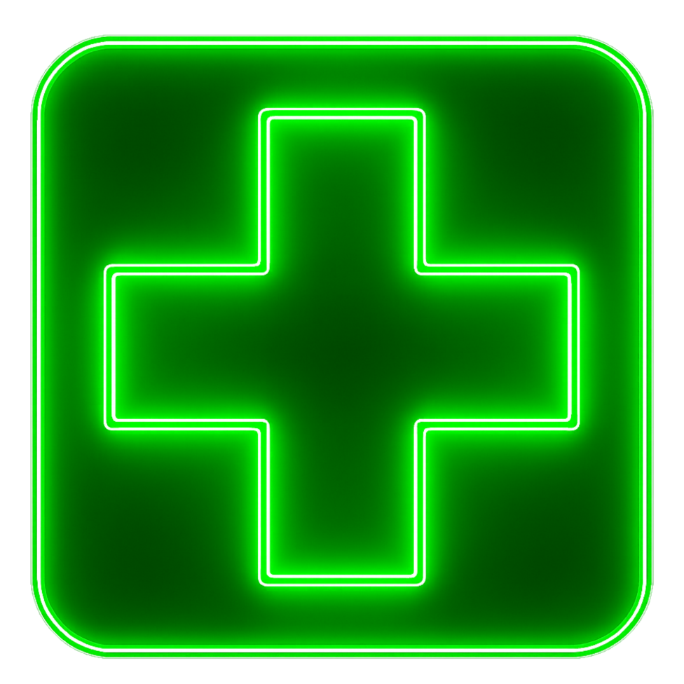
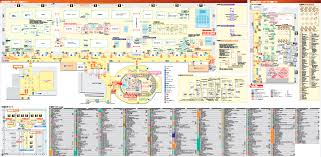
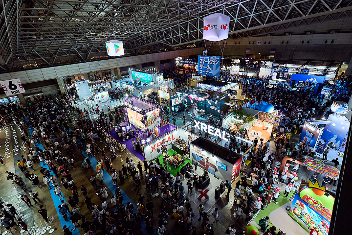
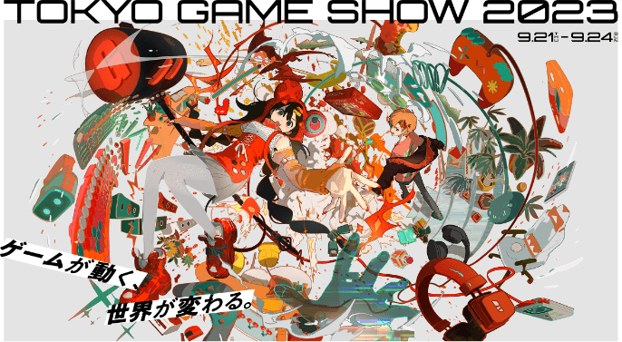
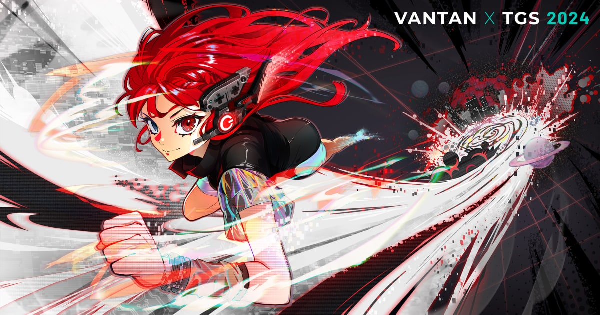
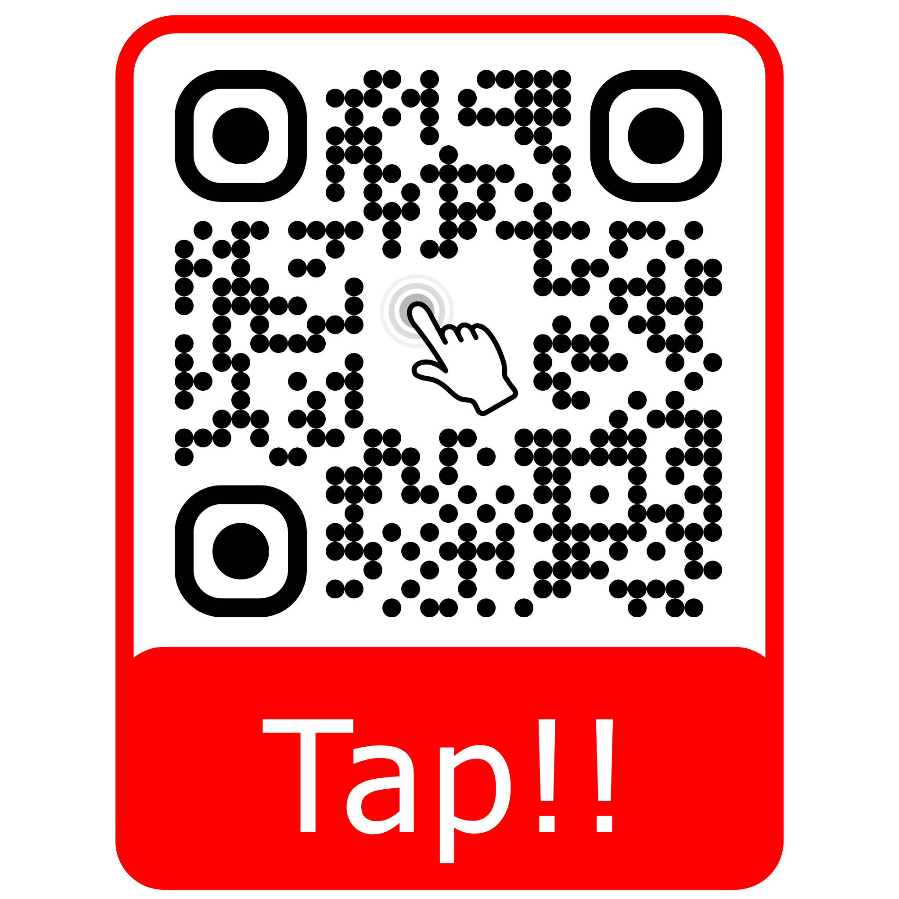

音の刃
メニュー
遊び方
作品紹介
お問い合わせ
お使いのブラウザはビデオ再生をサポートしていません。
音
の
刃
音の刃
おいでませ

会場
ここ


遊び方
タイミングよく腕を振ってノーツを切ろう！

題名
サンプルテキスト

題名
サンプルテキスト
Subscribe to receive updates!
Notify Me!
An email is required.
Email is not valid.
Form submission successful!
To activate this form, sign up at
Error sending message!
東北電子専門学校
ゲームエンジニア科3年
Email
230169@jc-21.jp
Phone
+81 (080) 8843-1022

アンケートにご協力お願いします！
こちらからアンケートにご協力お願いします！
背景クリック / ESC で閉じる